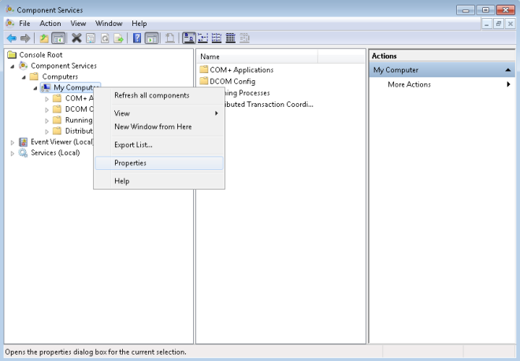
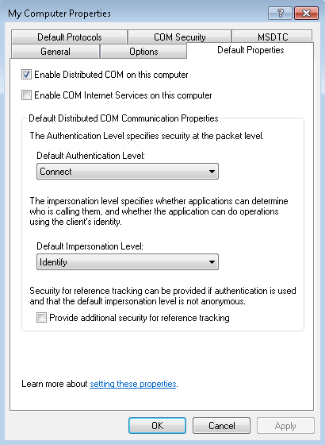
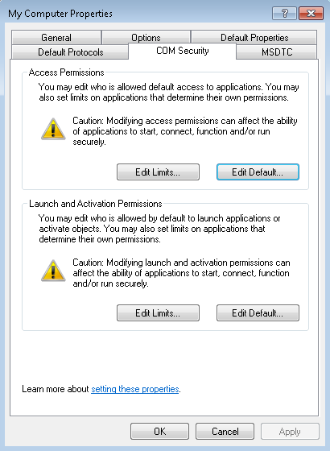
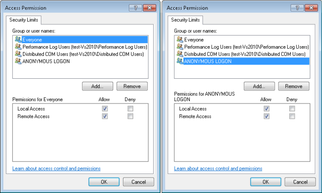
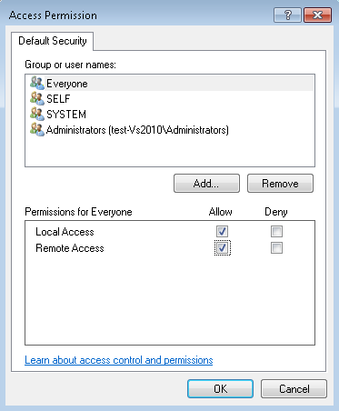
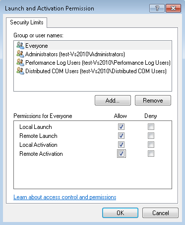
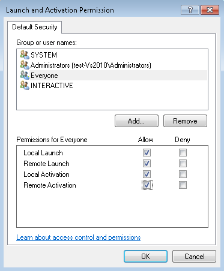

Configure Default System-wide DCOM Settings
System-wide changes affect all Windows applications that use DCOM, including the OPC application. In addition, since OPC client applications do not have their own DCOM settings, they are affected by the changes to the default DCOM configuration. To modify the configuration, do the following procedure.
Display My Computer Properties
- In the Windows search box on the taskbar, enter DCOMCNFG.
- Press ENTER.
- The DCOM configuration process is initiated.
- In the Component Services window, under Console Root, expand Component Services, and expand the Computers folder.
- My Computer is in the Computers folder.
- Right-click My Computer and select Properties to display the My Computer Properties dialog box.

Set up Default Properties
- In the My Computer Properties dialog box, click the Default Properties tab.
- Ensure that three specific options are set as follows:
a. Select the Enable Distributed COM on this computer option.
NOTE: If this option is modified, it is necessary to reboot the computer.
b. From the Default Authentication Level drop-down list, select Connect.
c. From the Default Impersonation Level drop-down list, select Identify.
NOTE: The components needed to verify Desigo CC OPC DA server are indicated in bold type.
d. Click Apply.

Set up Default Protocols
- In the My Computer Properties dialog box, click the Default Protocols tab.
Set the DCOM Protocols to Connection-oriented TCP/IP. - Click Apply.
NOTE: OPC communication only requires connection-oriented TCP/IP, so it is possible to delete the rest of DCOM protocols. However, if these protocols are indeed required for non-OPC applications; you must not remove them. The only consequence is that timeouts may take a little longer to reach Test Mode.
Set up COM Security
Windows uses the COM Security tab to set the system-wide Access Control List (ACL) for all the objects. The ACLs are included for Launch/Activation (ability to start an application), and Access (ability to exchange data with an application).
To add the correct permissions, do the following on the server machine:
- In the My Computer Properties dialog box, click the COM Security tab.

- In the Access Permissions section, click Edit Limits.
- In the Access Permission dialog box, do the following:
a. Add ANONYMOUS LOGON and Everyone to the list of Group or user names.
b. For both, select the Local Access and Remote Access options.
c. Click OK. 
- In the Access Permissions section, click Edit Default.
- In the Access Permission dialog box, do the following:
a. Add Everyone to the list of Group or user names.
b. Select the Local Access and Remote Access options.
c. Click OK. 
- In the Launch and Activation Permissions section, click Edit Limits.
- In the Launch and Activation Permission dialog box, do the following:
a. Add Everyone to the list of Group or user names.
b. Select the following options: Local Launch, Remote Launch, Local Activation, and Remote Activation.
c. Click OK. 
- In the Launch and Activation Permissions section, click Edit Default.
- In the Launch and Activation Permission dialog box, do the following:
a. Add Everyone to the list of Group or user names.
b. Select the following options: Local Launch, Remote Launch, Local Activation, and Remote Activation.
c. Click OK. 
- In the My Computer Properties dialog box, click Apply.
NOTE: If the computer is in a workgroup, the process requires adding the NETWORK user by performing the same steps as for the Everyone user as follows:
- In the Access Permissions section, click Edit Limits, and do the following:
a. In the Access Permission dialog box, add NETWORK to the Group or user names list.
b. Select the Local Access and Remote Access options.
c. Click OK. - In the Access Permissions section, click Edit Default, and do the following:
a. In the Access Permission dialog box, add NETWORK to the Group or user names list.
b. Select the Local Access and Remote Access options.
c. Click OK. - In the Launch and Activation Permissions section, click Edit Limits, and do the following:
a. In the Launch and Activation Permission dialog box, add NETWORK to the Group or user names list.
b. Select the following options: Local Launch, Remote Launch, Local Activation, and Remote Activation.
c. Click OK. - In the Launch and Activation Permissions section, click Edit Default, and do the following:
a. In the Launch and Activation Permission dialog box, add NETWORK to the Group or user names list.
b. Select the following options: Local Launch, Remote Launch, Local Activation, and Remote Activation.
c. Click OK.